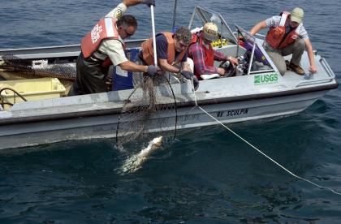

Fish Habitat Enhancement Strategies for the Huron-Erie Corridor
Template #70

The Huron-Erie Corridor (HEC) is the connecting channel between Lake Huron and Lake Erie, including the St. Clair River, Lake St. Clair, Detroit River, and western Lake Erie. The HEC contains the largest freshwater delta in the Great Lakes, supports over 65 species of fish, 16 of which are classified as threatened or endangered, and is one of the busiest navigation centers in the United States. Historically, the HEC supported a highly productive fishery, providing spawning and nursery habitat for 80 fishery species, including lake trout, lake sturgeon, lake whitefish, lake herring, walleye, and yellow perch. Unfortunately, over the last century, fish productivity in the HEC has been dramatically reduced due to construction of shipping channels, which severely altered fish spawning grounds and nursery habitats. The goal of this GLRI project is to enhance native fish populations through restoration of fish spawning and nursery habitats in the HEC and St. Clair and Detroit Rivers Areas of Concern (AOCs). The USGS is providing vital information to define restoration targets in AOCs, and is measuring restoration success through pre- and post-habitat construction assessments. This work is being completed as part of the greater Huron-Erie Corridor Initiative (http://huron-erie.org/), a highly collaborative initiative started in 2004 by the USGS Great Lakes Science Center and over 20 partners to restore habitats and native fish and wildlife species in the corridor, ultimately providing societal, economic, and environmental benefits to the Great Lakes region.
The main objective of this project is to identify locations within the St. Clair and Detroit Rivers that provide the best opportunities for remediation of fish spawning and nursery habitats, with the ultimate goal of enhancing native fish populations. Information about existing river habitat, current patterns, fish nursery areas, movements, spawning, and early life habitat requirements are being used in adaptive management models to identify areas suitable for creation or restoration of fish habitats. Physical and biological information are being coupled to show where and how habitat restoration will produce the strongest benefits to native fishes at multiple locations in the St. Clair and Detroit Rivers. This project also addresses AOC delisting goals in the St. Clair and Detroit Rivers by mapping current areas of fish habitat, identifying sites for habitat restoration, and examining connectivity to surrounding habitats.
This project is remediating some of the effects of development (e.g., shoreline hardening, channelization, infilling of wetlands) over the last century on native fish species and their habitats in the HEC. Scientists are identifying remaining habitat fragments and new areas where habitat restoration could produce self-sustaining populations of native fishes. Information gained from previous research conducted by the USGS Great Lakes Science Center and partners in the Detroit River resulted in the construction of two fish spawning reefs that are used by at least 14 species of native fish, including economically important walleye and lake sturgeon (threatened in Michigan and Ontario). This project builds upon previous work by expanding the spatial scope of restoration to include the St. Clair River and Lake St. Clair. Habitat assessment and restoration techniques developed in the HEC through this project could be applied to other Great Lakes connecting channels, such as the St. Marys and Niagara Rivers, and the Welland Canal. To ensure that information generated through this project is accessible by local communities, an outreach partnership with Michigan Sea Grant has been developed. Ultimately, this work will enhance ecologically and economically valuable fish populations in the HEC, and contribute to the revitalization of the region.
TThe USGS conducted intensive surveys in the St. Clair and Detroit Rivers in 2010-2012 to assess the extent of fish spawning and nursery habitat use. Data gathered from these surveys were used in geographic, hydrodynamic models that predicted lake sturgeon, walleye, and lake whitefish spawning areas that would be suitable for spawning reef construction. The USGS continued to measure the extent of fish spawning and abundance of larval fishes in 2012 at more than 20 sites in the Detroit River and western Lake Erie. Ongoing sampling at these sites is providing information on the timing and spatial distribution of fish spawning, fish eggs, and larvae necessary for restoration efforts. Restored habitats are attracting numerous fish, including multiple threatened species, showing proof-of-concept for this science-guided restoration project. Since 2010, nine Northern madtoms have been captured in the Detroit River. Madtoms are endangered in Michigan and Ontario and are considered globally rare. Assessment data have revealed that madtoms use the constructed reefs created in the Detroit River. Additionally, multiple lake sturgeon in spawning condition were collected on restored habitats. The first collection of juvenile lake sturgeon was made in the Detroit River during 2010, suggesting successful spawning of sturgeon on restored habitat. Juvenile lake herring were also collected in the St. Clair and Detroit Rivers during 2011 and 2012.
The USGS, in collaboration with management agency partners, began developing a conservation action plan during 2012 to provide a fine-scale assessment of the St. Clair and Detroit Rivers. The conservation action plan will identify knowledge gaps and aid in future monitoring and the prioritization of restoration efforts within the system.
Edward F. Roseman, eroseman@usgs.gov 734-214-7237